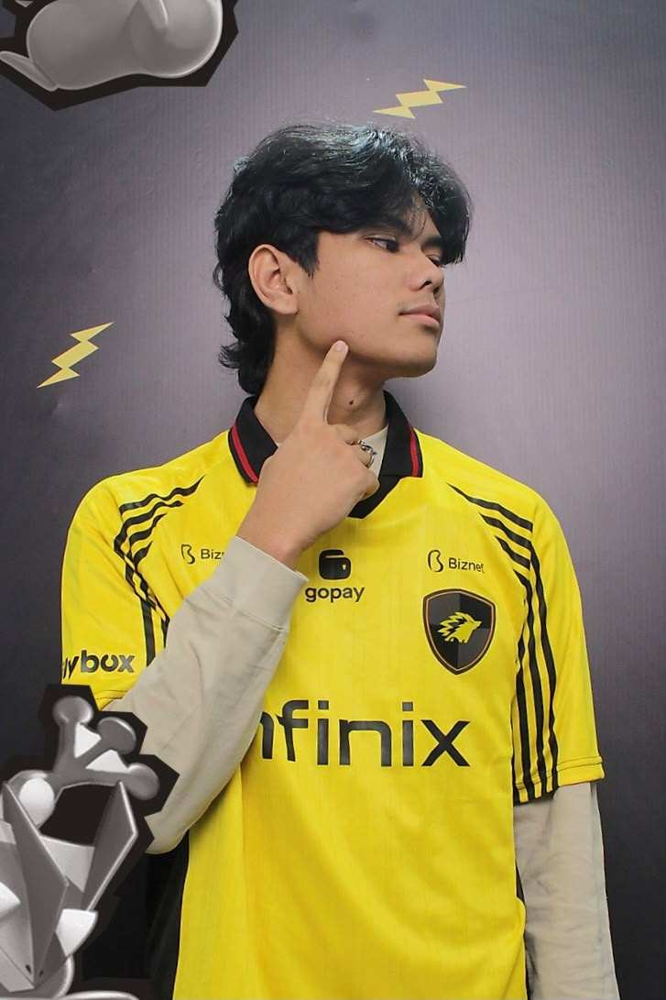

Student Profile

Halo, nama saya Rocky Aldi Abadi Bangun, mahasiswa di Universitas Advent Indonesia. Saya kuliah di program studi Sistem Informasi, Fakultas Teknologi Informasi.
Halaman ini dibuat sebagai bagian dari tugas praktikum Web Programming I untuk mempelajari desain website yang responsif.
Personal Information
Name: Rocky Aldi Abadi Bangun
Student ID (NIM): 2582015
Study Program: Information Systems
Email: 2582015@unai.edu
My Hobbies
My Favorite Hobbies
- Catur
- Tidur
- Main
Other Activities I Enjoy
- Dengar Musik
- Nonton film
- Nongkrong
- Berenang
Academic Record
| No | Semester | Academic Year | GPA |
|---|---|---|---|
| 1 | Odd Semester | 2025/2026 | 3.60 |
| 2 | Even Semester | 2025/2026 | 3.40 |